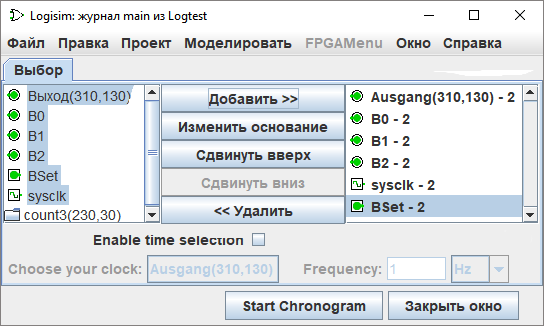

Вкладка Выбор
Вкладка Выбор позволяет указать, сигналы каких компонентов должны быть включены во временную диаграмму. Показанное ниже окно соответствует следующей схеме.


Окно разделено на три вертикальные области. Первая (крайняя левая) представляет собой список всех компонентов схемы, сигналы которых можно отслеживать. Среди встроенных библиотек отслеживание поддерживается для следующих типов компонентов:
Библиотека «Монтаж»: компоненты Контакт, Датчик и Тактовый генераторДля компонентов, которым присвоены метки, в списке отображаются их имена (метки); для компонентов без меток отображается их тип и координаты на схеме.
Библиотека «Ввод/вывод»: компоненты Кнопка и Светодиод
Библиотека «Память»: все компоненты, кроме ПЗУ (ROM)
Вложенные подсхемы также отображаются в списке: выбрать саму подсхему для отслеживания нельзя, но можно раскрыть её структуру и выбрать отдельные внутренние компоненты. Обратите внимание, что для ОЗУ (RAM) необходимо указать конкретные адреса ячеек памяти для отслеживания (поддерживается отслеживание только первых 256 адресов).
Тактовый сигнал sysclk должен быть в этом списке, но он не будет отображаться на графике.
Последняя (крайняя правая) вертикальная область содержит список выбранных для отслеживания сигналов. Также для многоразрядных сигналов здесь указывается система счисления, в которой будут отображаться их значения (для однобитных сигналов этот параметр не имеет существенного значения).
Центральный столбец с кнопками позволяет изменять состав и порядок отслеживаемых сигналов:
- Добавить>> — добавляет в список выделенные слева сигналы. Кнопка активна только для подходящих компонентов.
- Изменить систему счисления — циклически переключает формат отображения многоразрядного значения для выделенного в правой области сигнала между 2 (двоичным), 10 (десятичным) и 16 (шестнадцатеричным).
- Сдвинуть вверх — перемещает выбранный сигнал на одну позицию выше в списке.
- Сдвинуть вниз — перемещает выбранный сигнал на одну позицию ниже в списке.
- << Удалить — убирает выделенный сигнал из списка отслеживаемых.
Четвёртая область снизу позволяет настроить отображение шкалы времени над графиком. Для этого необходимо установить флажок «Шкала времени» (Time reference) и выбрать опорный сигнал. Заданная частота определит отображаемый временной шаг (масштаб времени). Обратите внимание, что это никак не влияет на реальную скорость выполнения моделирования схемы. Например, ниже выбран сигнал B0 и частота 100 Гц.

Далее: Окно временной диаграммы.